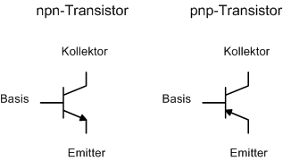
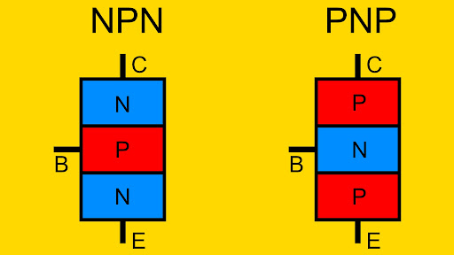

Bipolartransistoren
Ein Bipolartransistor (BJT, Bipolar Junction Transistor) ist ein Halbleiterbauelement, das Stromfluss steuern und verstärken kann. Er wird in vielen analogen und digitalen Schaltungen eingesetzt und ist aus drei Schichten unterschiedlicher Dotierung aufgebaut. Diese Schichten bilden zwei p-n-Übergänge, was ihm die Fähigkeit verleiht, als Verstärker oder Schalter zu fungieren. Ein BJT hat drei Anschlüsse: die Basis (B), den Kollektor (C) und den Emitter (E). Die beiden Haupttypen von Bipolartransistoren sind der NPN-Transistor und der PNP-Transistor.

Grundaufbau und Dotierung
Ein BJT besteht aus drei unterschiedlich dotierten Halbleiterschichten:
- NPN-Transistor: Die Reihenfolge ist N-P-N, wobei der Kollektor und der Emitter n-dotiert und die Basis p-dotiert sind.
- PNP-Transistor: Die Reihenfolge ist P-N-P, wobei der Kollektor und der Emitter p-dotiert und die Basis n-dotiert sind.
Die Funktionsweise der Transistoren basiert darauf, dass ein kleiner Strom an der Basis (B) den Stromfluss zwischen dem Kollektor (C) und dem Emitter (E) steuert.

Funktionsweise und Stromverstärkung
Der BJT funktioniert wie ein steuerbarer Widerstand: Ein kleiner Stromfluss an der Basis-Emitter-Strecke steuert einen deutlich größeren Stromfluss zwischen Kollektor und Emitter. Dabei sind zwei Betriebsarten entscheidend:
- Aktiver Bereich (Verstärkermodus): Der Transistor arbeitet als Verstärker, indem ein kleiner Basisstrom
I_Beinen größeren KollektorstromI_Csteuert. - Sättigungsbereich (Schaltermodus): Der Transistor arbeitet als Schalter. Wenn der Transistor "eingeschaltet" ist, fließt der maximale Strom zwischen Kollektor und Emitter.
Die Verstärkungsfunktion des BJTs wird durch den Stromverstärkungsfaktor β beschrieben:
β = I_C / I_B
wobei:
I_C: der Kollektorstrom,I_B: der Basisstrom,β: der Verstärkungsfaktor, typischerweise zwischen 20 und 1000 (abhängig vom Transistortyp).
In der Praxis ist der Emitterstrom I_E die Summe aus Kollektor- und Basisstrom:
I_E = I_C + I_B
Dies ergibt die Beziehung:
I_C = β * I_B
und I_E lässt sich mit dem Stromverstärkungsfaktor des Transistors berechnen.
Funktionsweise im Detail: Betriebspunkte
Für praktische Anwendungen ist die Betriebsweise des Transistors in einem bestimmten "Arbeitspunkt" wichtig, der das Verhalten im Stromkreis festlegt:
- Sperrbereich: Kein Basisstrom, kein Kollektorstrom – der Transistor ist ausgeschaltet.
- Aktiver Bereich: Der Basis-Emitter-Übergang ist leitend und der Basis-Kollektor-Übergang ist gesperrt. Hier funktioniert der Transistor als Verstärker.
- Sättigungsbereich: Beide Übergänge sind leitend – der Transistor ist voll eingeschaltet und leitet maximalen Strom.
- Durchbruchbereich: Wird vermieden, da hier hohe Ströme fließen und der Transistor beschädigt werden könnte.
Formeln zur Berechnung in der Praxis
Ein BJT ist in der Schaltung meist über Widerstände und Spannungsquellen eingebunden, um ihn im gewünschten Betriebsmodus zu halten. Häufige Schaltungsarten sind die Emitter-, Basis- und Kollektorschaltung. Hier die wichtigsten Berechnungsgrundlagen:
Basis-Emitter-Spannung
Im aktiven Modus liegt zwischen Basis und Emitter eine Spannung U_BE, die für Siliziumtransistoren typischerweise etwa 0,7 V beträgt:
U_BE ≈ 0.7 V
Spannungen und Ströme
- Basiswiderstand
R_B: Ein Basiswiderstand limitiert den BasisstromI_B, um die Verstärkung zu regulieren:
I_B = (U_in - U_BE) / R_B
Hier ist U_in die Eingangsspannung.
- Kollektorwiderstand
R_C: In der Emitter-Schaltung, einer der häufigsten Konfigurationen, wirdR_Czur Begrenzung des Kollektorstroms verwendet:
U_C = U_CC - I_C * R_C
wobei U_CC die Versorgungsspannung ist.
- Verstärkung
U_out/U_in: Die Spannungsverstärkung in der Emitter-Schaltung wird durch den Quotienten von Ausgangs- und Eingangssignal erreicht. Dies ist jedoch stark abhängig vonR_C, dem Lastwiderstand und dem Innenwiderstand des Transistors.
Anwendung in Verstärker- und Schaltkreisen
Verstärker: Im aktiven Bereich verstärkt der Transistor kleine Signale am Eingang (Basis-Emitter-Strecke) zu größeren Signalen am Ausgang (Kollektor-Emitter-Strecke). Verstärker finden Anwendung in Audiosystemen, Radios und Signalverarbeitung.
Schalter: Im Sättigungs- und Sperrbereich kann ein Transistor als Schalter eingesetzt werden, indem er den Stromfluss zwischen Kollektor und Emitter an- und ausschaltet. Diese Schaltfunktion wird in digitalen Schaltungen, z. B. Mikroprozessoren, eingesetzt.
Bipolartransistoren sind aufgrund ihrer Vielseitigkeit und Leistungsfähigkeit in analogen und digitalen Anwendungen sehr verbreitet. Die präzise Kontrolle über Strom und Spannung sowie die einfache Berechnung machen sie zu einem der wichtigsten Halbleiterbauteile.